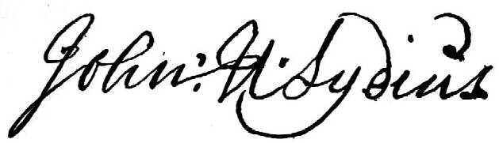

|
by Stefan Bielinski John Henry Lydius was christened in Albany in July 1704. He was the only son of Domine Johannes and Isabella Rachels Lydius. He was deprived of paternal guidance when his father died before the boy was five. Raised by his mother and stepfather and mentored by his brother-in-law, Albany trader Jacob Staats, young John Henry went into the north woods to make his way in the Indian trade. By the late 1720s, he had settled in New France - establishing himself in the fur trade and marrying Genevieve Masse, a French and Indian woman. They were married in Montreal in February 1727. During the 1720s, Lydius had negotiated with the Indians for lands in violation of French royal policy. His background and aggressive trading practices in underpopulated New France placed him under constant suspicion. In 1730, he was condemned by French officials, fined, and banished from the colony. His numerous detractors considered him "dangerous" and likely to turn the Indians against the French. As the son of a well-known "English" missionary, he also was denigrated as an enemy of Catholicism. The Lydiuses left Quebec shortly after the birth of their second child - whom John Henry refused to have baptized in the French church. By the summer of 1731, Lydius had erected a trading post on the upper Hudson River at its juncture with Fort Edward Creek. His growing family spent winters at the family home in Albany from which John Henry bartered furs for trade goods. During the long period of peace (1713-44), Lydius expanded his holdings at Fort Edward. He prospered in the Indian trade, erected a sawmill, and began to acquire Indian deeds to surrounding wilderness lands. In 1745, Lydius inherited the Albany home on the death of his mother. As had become their custom, the Lydius family had retired there by November 27 when a band of French and Indian rangers surprised his Upper Hudson settlement. Martinus Lydius and several others were captured and the Lydius buildings probably were destroyed. The raiders continued on to attack and burn Old Saratoga and took a large number of prisoners from the region to Canada. After arranging for the exchange of his son, Lydius may have rebuilt the Fort Edward home. But the outbreak of war in 1754 ended any thoughts of re-establishing his enterprises there. During the middle decades of the century, John Henry Lydius used his relationship with the neighboring Indians to acquire titles to substantial tracts of land. The Wood Creek "grant" encompassing the Fort Edward settlement and the Battenkill valley may have encompassed 200 square miles. The huge Otter Creek "grant" - extending from the upper falls to its outlet on Lake Champlain, may have covered as much as 500 square miles. Although his titles were not recognized by New York authorities, Lydius sold many land parcels in New England, New France, and New York. By the 1750s, he was coming under increasing scrutiny from provincial authorities, unwitting would-be land owners, and the Mohawks and other Native Peoples who now claimed Lydius had defrauded them as well. Lydius tried to ignore those troubles and turned his attention to the Pennsylvania wilderness where in 1754 he acquired Indian lands on behalf of some New Englanders.  In the meantime, he sought respectability closer to home - establishing another mill and an inn/trading house, serving provincial armies during the Great War for Empire, and being elected to the Albany Common Council in 1760. However, he continued to issue titles for lands to the North. In 1761, provincial authorities warned would-be pioneers not to act on Lydius's deeds. They also instituted legal proceedings against him. By 1765, many new deed owners, including future Revolutionary polemicist Dr. Thomas Young, had come to Albany to register the Lydius deeds only to find them invalid and Lydius out of the country. One step ahead of his enemies, John Henry Lydius had decided to travel to England to petition for confirmation of his land titles. Lydius never returned. By the late 1770s, his wife often was called "Widow Lydius" - even though her husband was living abroad. The progress of his mission to england remains unknown but he did travel to the Netherlands during the 1780s where he sold more deeds this time to would-be Swiss settlers. While in Holland, he became ill and an invalid for several years. He returned to England in 1788. A fall in November 1790 sent his health on another downward spiral. After amending his will and paying the scribe with yet another dubious New York tract, he died at Kensington early in 1791. A popular British magazine printed his obituary. He was described as: tall and well made, in his youth measuring six feet and two inches, although he became stooped in old age. He always dressed in black with a military hat and cockade. In his younger days he had both legs broken by a log rolling on him off a saw-pit, but he was not affected by lamenesss. He had also lost the sight of one eye. He had an excellent memory, which was clear to the last. In politics he was a staunch Whig and very loyal to the House of Orange, and in religion a Calvinist. His manner of living was tea twice a day, a hearty dinner and not infrequently ten eggs boiled hard. He ate no supper and drank only a small beverage. In winter he never wore a great coat, but went open breasted and he expected to live to be over one hundred years old. Lydius's sons had no children so the name passed from New York rolls with the death of the reclusive and eccentric Balthazar Lydius in 1815. John Henry Lydius's life spanned much of the eighteenth-century. The son of a beloved and pious Dutch Reformed minister, he made his name in the Indian trade and in land speculation. His career was both aided and compromised by conflicting perceptions of him. Called an English agent by the French, a forked-tongued serpent by the Indians, a traitor by provincial authorities, and a swindler by embarrassed title holders from several colonies, he left that notoriety for posterity when he left New York in 1765. The subject of frequent romanticized and antiquarian profiles during the two centuries that followed, the legend of this frontier maverick lives on!
|